rm(list = ls())
library(dplyr)
library(data.table)
library(ggplot2)
source('../code/rlib_doc.R')It has drawn my attention that monocyte count distribution is a bit skewed and there are multiple modes. To look into this, I query several fields related to monocyte count.
dict = read.csv("http://biobank.ctsu.ox.ac.uk/~bbdatan/Data_Dictionary_Showcase.csv")
related_ids = data.frame(
id = c(30134, 30132, 30133, 30131, 30130),
name = c('acquisition_route', 'acquisition_time', 'device_id', 'freeze_cycle', 'monocyte')
)
myextract = dict %>% filter(FieldID %in% related_ids$id)
myextract = inner_join(myextract, related_ids, by = c('FieldID' = 'id'))
mydata = meta_info_to_query(myextract$name, myextract$FieldID, myextract$Instances, myextract$Array)current_yaml = yaml::read_yaml('../misc/second_query.yaml')Mainly to define individual filtering.
good_fields = readRDS('../output/fields_on_nucleus.rds')
for(n in names(mydata)) {
if(! mydata[[n]] %in% good_fields) {
mydata[[n]] = NULL
}
}current_yaml$data = mydata
yaml::write_yaml(current_yaml, '../output/query_monocyte.yaml')if [[ ! -f ../output/query_monocyte_output.csv ]]
then
curl -X POST \
-H "Accept: text/csv" \
-F file=@../output/query_monocyte.yaml \
-F section=data \
http://127.0.0.1:12345/ukbrest/api/v1.0/query > ../output/query_monocyte_output.csv
fiLoad query.
df = fread('../output/query_monocyte_output.csv', header = T, sep = ',', data.table = F)df_sub = df %>% select(eid, monocyte_x_instance_0_x_array_0, acquisition_time_x_instance_0_x_array_0, device_id_x_instance_0_x_array_0, acquisition_route_x_instance_0_x_array_0) %>% filter(!is.na(monocyte_x_instance_0_x_array_0))
df_sub = df_sub %>% mutate(acquisition_time_x_instance_0_x_array_0 = GENEAread::parse.time(acquisition_time_x_instance_0_x_array_0))
meta = list()
for(i in colnames(df_sub)) {
if(i == 'eid') {
next
}
meta[[length(meta) + 1]] = data.frame(var = i, nlevel = length(unique(df_sub[, i])))
message('Number of unique values in ', i, ': ', length(unique(df_sub[, i])))
}## Number of unique values in monocyte_x_instance_0_x_array_0: 469## Number of unique values in acquisition_time_x_instance_0_x_array_0: 430864## Number of unique values in device_id_x_instance_0_x_array_0: 4## Number of unique values in acquisition_route_x_instance_0_x_array_0: 2meta = do.call(rbind, meta)
subsample = subsample_for_vis(rep(1, nrow(df_sub)), nmax = 10000)
df_sub %>% filter(subsample) %>% ggplot() + geom_density(aes(x = monocyte_x_instance_0_x_array_0)) + coord_cartesian(xlim = c(0, 2))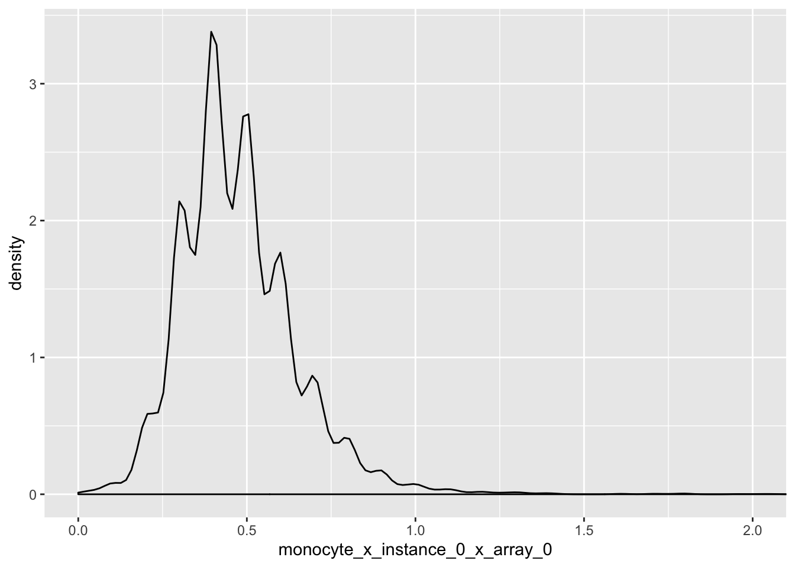
df_plot = df_sub %>% filter(subsample)
meta$var = as.character(meta$var)
for(i in 1 : nrow(meta)) {
if(meta$var[i] == 'monocyte_x_instance_0_x_array_0') {
next
}
tmp = df_plot[, c(meta$var[i], 'monocyte_x_instance_0_x_array_0')]
colnames(tmp)[1] = 'x'
if(meta$nlevel[i] < 10) {
p = ggplot(tmp) + geom_density(aes(x = monocyte_x_instance_0_x_array_0, fill = factor(x)), alpha = .5) + coord_cartesian(xlim = c(0, 2))
} else {
p = ggplot(tmp) + geom_point(aes(x = x, y = monocyte_x_instance_0_x_array_0), alpha = .5)
}
print(p + ggtitle(meta$var[i]))
}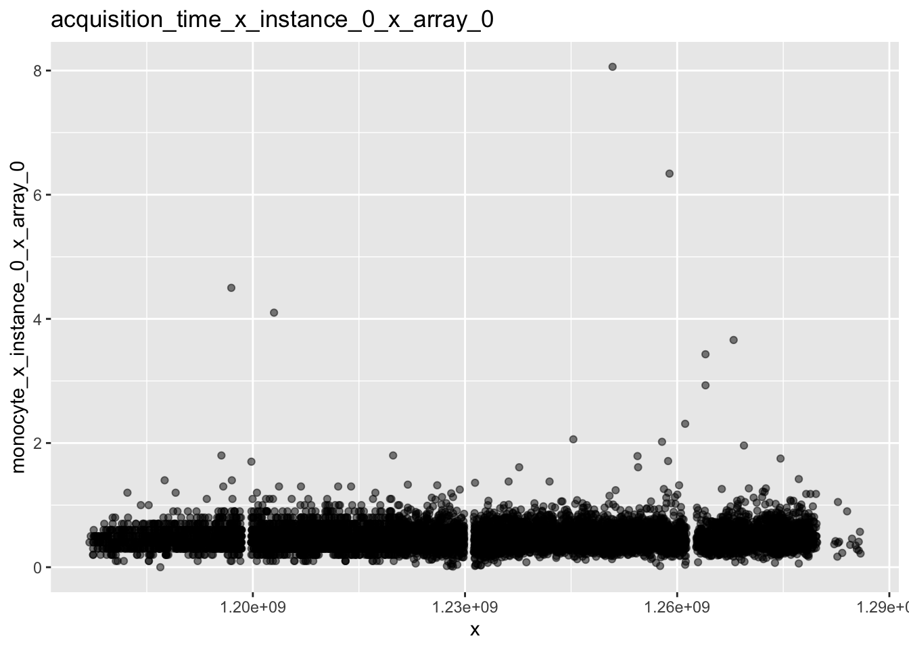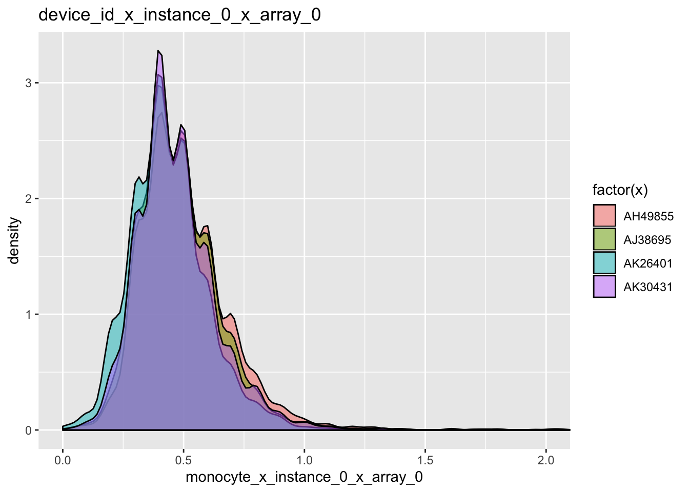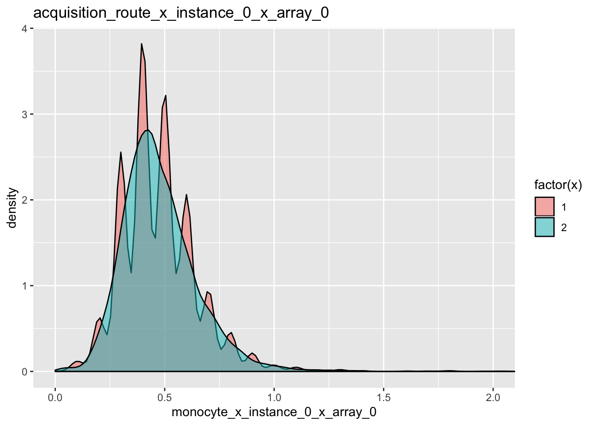
ggplot(df_plot) + geom_boxplot(aes(x = factor(acquisition_route_x_instance_0_x_array_0), y = acquisition_time_x_instance_0_x_array_0))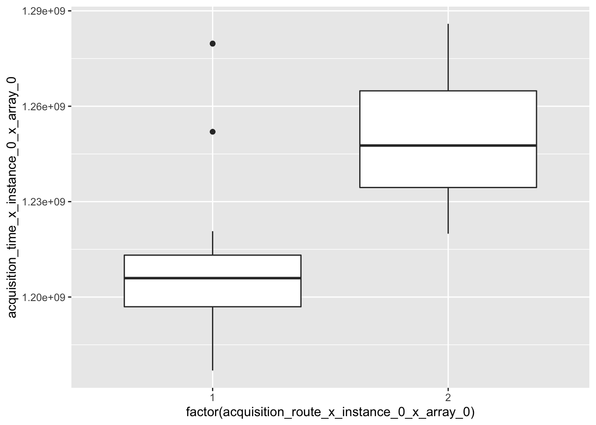
df_sub = df %>% select(eid, monocyte_x_instance_1_x_array_0, acquisition_time_x_instance_1_x_array_0, device_id_x_instance_1_x_array_0, acquisition_route_x_instance_1_x_array_0) %>% filter(!is.na(monocyte_x_instance_1_x_array_0))
df_sub = df_sub %>% mutate(acquisition_time_x_instance_1_x_array_0 = GENEAread::parse.time(acquisition_time_x_instance_1_x_array_0))
meta = list()
for(i in colnames(df_sub)) {
if(i == 'eid') {
next
}
meta[[length(meta) + 1]] = data.frame(var = i, nlevel = length(unique(df_sub[, i])))
message('Number of unique values in ', i, ': ', length(unique(df_sub[, i])))
}## Number of unique values in monocyte_x_instance_1_x_array_0: 149## Number of unique values in acquisition_time_x_instance_1_x_array_0: 17826## Number of unique values in device_id_x_instance_1_x_array_0: 2## Number of unique values in acquisition_route_x_instance_1_x_array_0: 2meta = do.call(rbind, meta)
subsample = subsample_for_vis(rep(1, nrow(df_sub)), nmax = 10000)
df_sub %>% filter(subsample) %>% ggplot() + geom_density(aes(x = monocyte_x_instance_1_x_array_0)) + coord_cartesian(xlim = c(0, 2))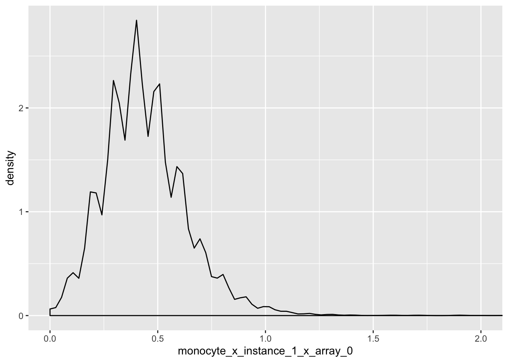
df_plot = df_sub %>% filter(subsample)
meta$var = as.character(meta$var)
for(i in 1 : nrow(meta)) {
if(meta$var[i] == 'monocyte_x_instance_1_x_array_0') {
next
}
tmp = df_plot[, c(meta$var[i], 'monocyte_x_instance_1_x_array_0')]
colnames(tmp)[1] = 'x'
if(meta$nlevel[i] < 10) {
p = ggplot(tmp) + geom_density(aes(x = monocyte_x_instance_1_x_array_0, fill = factor(x)), alpha = .5) + coord_cartesian(xlim = c(0, 2))
} else {
p = ggplot(tmp) + geom_point(aes(x = x, y = monocyte_x_instance_1_x_array_0), alpha = .5)
}
print(p + ggtitle(meta$var[i]))
}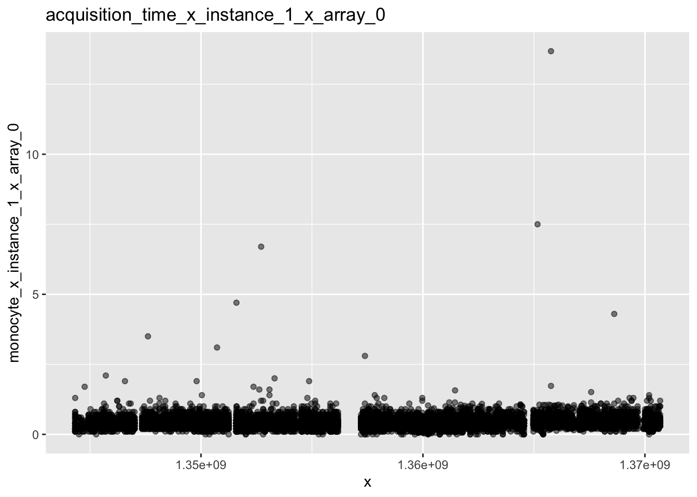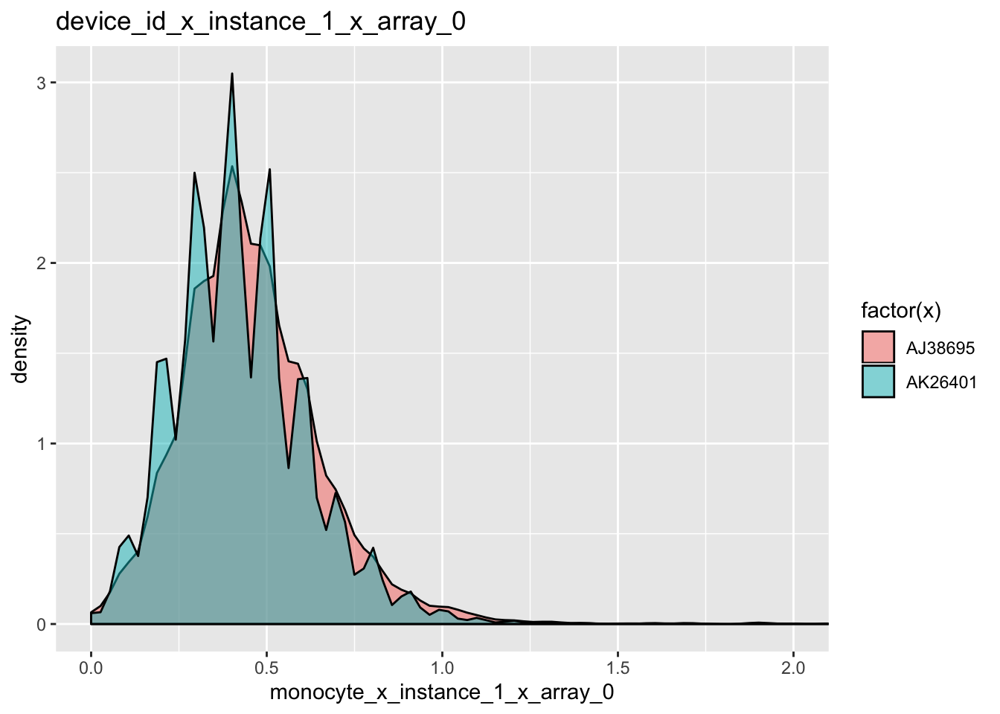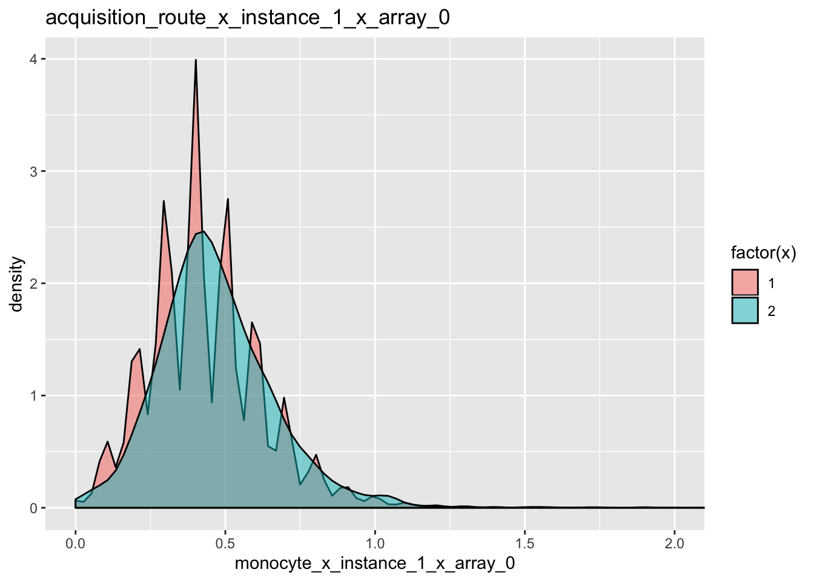
ggplot(df_plot) + geom_boxplot(aes(x = factor(acquisition_route_x_instance_1_x_array_0), y = acquisition_time_x_instance_1_x_array_0))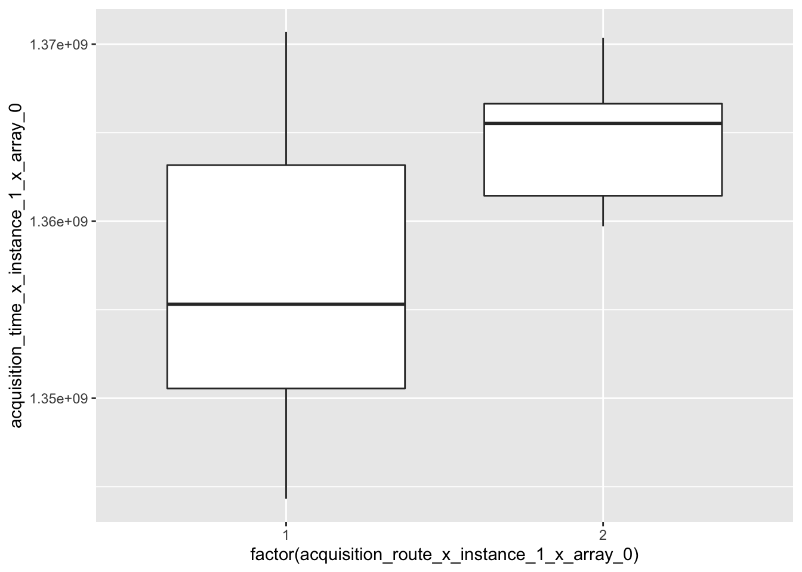
df_sub = df %>% select(eid, monocyte_x_instance_2_x_array_0, acquisition_time_x_instance_2_x_array_0, device_id_x_instance_2_x_array_0, acquisition_route_x_instance_2_x_array_0) %>% filter(!is.na(monocyte_x_instance_2_x_array_0))
df_sub = df_sub %>% mutate(acquisition_time_x_instance_2_x_array_0 = GENEAread::parse.time(acquisition_time_x_instance_2_x_array_0))
meta = list()
for(i in colnames(df_sub)) {
if(i == 'eid') {
next
}
meta[[length(meta) + 1]] = data.frame(var = i, nlevel = length(unique(df_sub[, i])))
message('Number of unique values in ', i, ': ', length(unique(df_sub[, i])))
}## Number of unique values in monocyte_x_instance_2_x_array_0: 136## Number of unique values in acquisition_time_x_instance_2_x_array_0: 5323## Number of unique values in device_id_x_instance_2_x_array_0: 2## Number of unique values in acquisition_route_x_instance_2_x_array_0: 2meta = do.call(rbind, meta)
subsample = subsample_for_vis(rep(1, nrow(df_sub)), nmax = 10000)
df_sub %>% filter(subsample) %>% ggplot() + geom_density(aes(x = monocyte_x_instance_2_x_array_0)) + coord_cartesian(xlim = c(0, 2))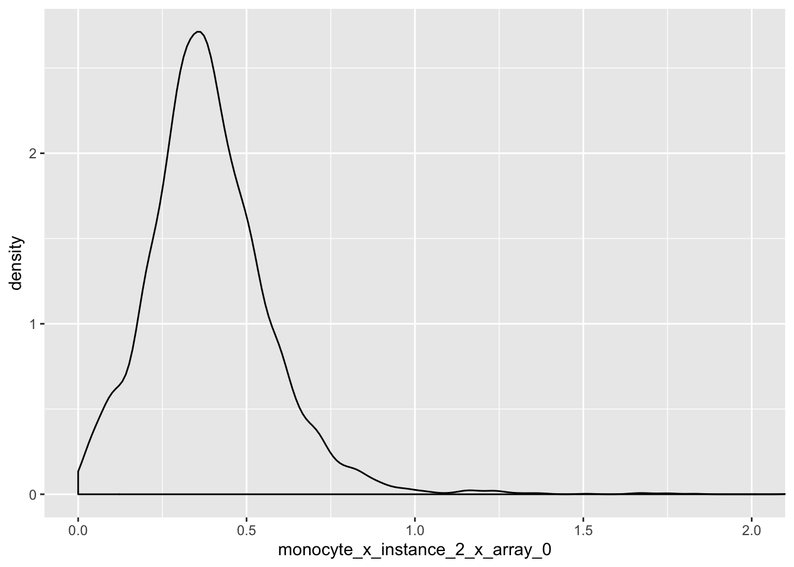
df_plot = df_sub %>% filter(subsample)
meta$var = as.character(meta$var)
for(i in 1 : nrow(meta)) {
if(meta$var[i] == 'monocyte_x_instance_2_x_array_0') {
next
}
tmp = df_plot[, c(meta$var[i], 'monocyte_x_instance_2_x_array_0')]
colnames(tmp)[1] = 'x'
if(meta$nlevel[i] < 10) {
p = ggplot(tmp) + geom_density(aes(x = monocyte_x_instance_2_x_array_0, fill = factor(x)), alpha = .5) + coord_cartesian(xlim = c(0, 2))
} else {
p = ggplot(tmp) + geom_point(aes(x = x, y = monocyte_x_instance_2_x_array_0), alpha = .5)
}
print(p + ggtitle(meta$var[i]))
}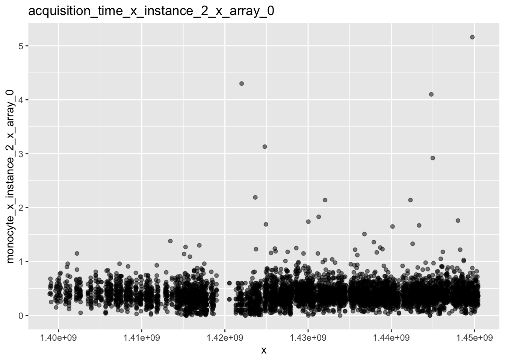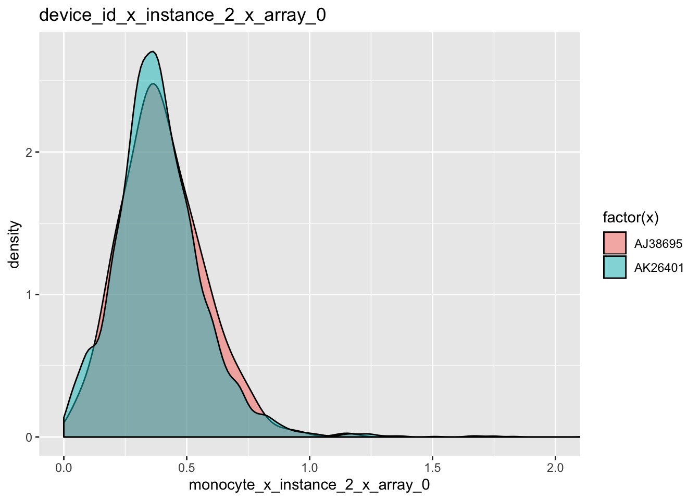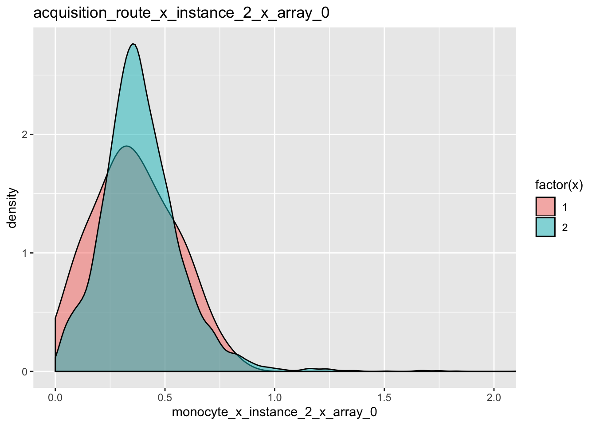
ggplot(df_plot) + geom_boxplot(aes(x = factor(acquisition_route_x_instance_2_x_array_0), y = acquisition_time_x_instance_2_x_array_0))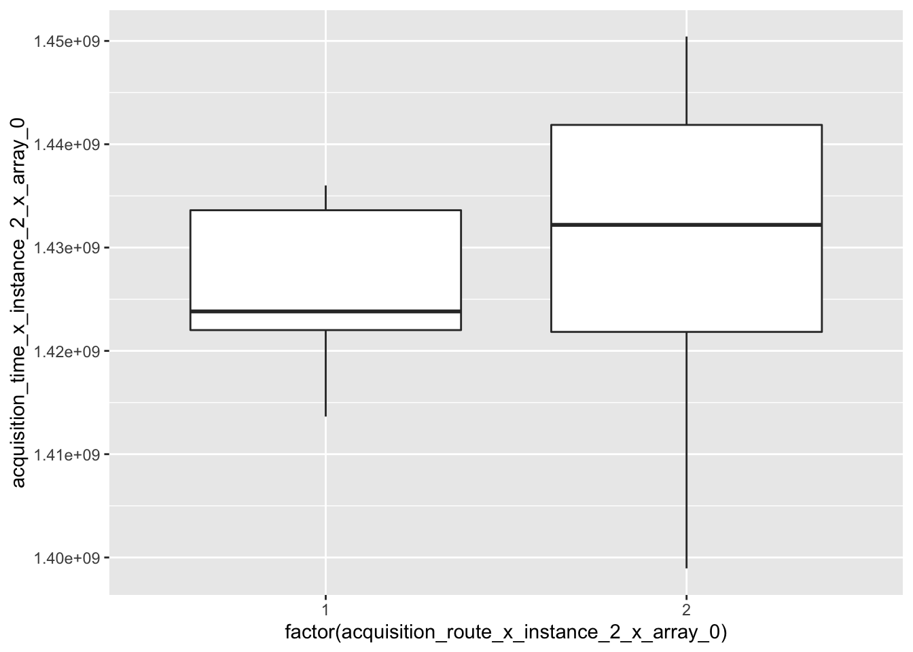